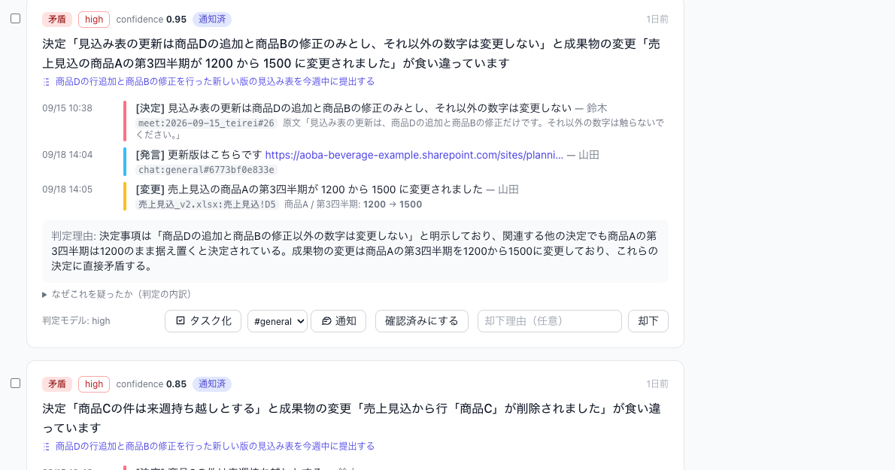
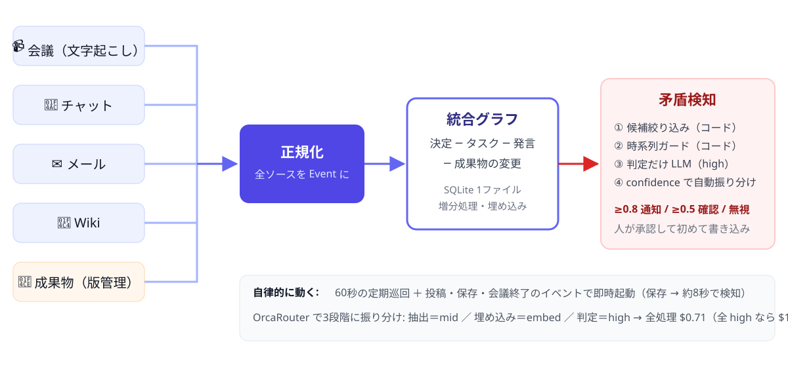

人が「確認して」と言う前に、
矛盾は見つかっている。
git clone → 3コマンド。API キー不要の replay で追体験できます。
 GitHub
GitHub Zenn 記事
Zenn 記事github.com/ryuga-yoshida/ai-hack-2026
設計書・評価セット・LLM キャッシュ同梱
ブースで触れます
設計書・評価セット・LLM キャッシュ同梱
ブースで触れます
吉田 龍河
既存ツールは「1つの中の検索・要約」は得意。
「横断して矛盾を探しに行く」ことはしない。


情報源が増えてもアダプタを足すだけ。
判定ロジックは情報源を知らない。
Teams / Outlook / SharePoint は Graph 形式の空実装で差し替え可。
| ① 候補 | タスク直結の決定 ＋ 埋め込み上位 × 語彙ゲート（対象語を含む決定だけ） |
|---|---|
| ② ガード | 時系列（決定が先）・30日以内・数式セルの値変化は除外 |
| ③ 判定 | 決定・変更・関連発言・その後の決定を渡して high が判定。same_subject が false なら矛盾扱いしない |
| ④ 行動 | confidence ≥ 0.8 通知 ／ ≥ 0.5 確認キュー ／ それ未満は無視 |
評価セット 10 ケース（矛盾あり 6・許容 4）を判定を変えるたびに再生。悪化したら戻す。
| high claude-opus-5 | 矛盾の判定だけ。1件ずつ根拠と文脈を渡す | $0.63 |
|---|---|---|
| mid gemini-3.6-flash | 抽出・紐付け最終段・議事録要約 | $0.21 |
| embed gemini-embedding | 候補絞り込み・重複統合・紐付け | $0.001 |
| コード | 時系列ガード・語彙ゲート・引用検証・閾値判定 | $0 |
料金表は /v1/models から取得。ダッシュボードに常時表示。
| 送るデータ | 判定に必要な最小限。人名・メール・電話はマスクして送信、応答で復元 |
|---|---|
| 指示の混入 | 議事録は「データ」として囲う。指示文を混入させた実演で、抽出に漏れないことを画面で示す |
| 幻覚 | 抽出結果の引用が原文に無ければ機械的に破棄 |
| 書き込み | エージェントは通知と提案まで。状態変更・成果物の書き換えは人が承認して初めて行う |
| 権限 | admin / member / viewer のロールで変更操作を制限。全変更を監査ログに記録。コネクタは読み取り専用スコープのみ |
| 置き場所 | SQLite 1ファイル。社内サーバーで完結。鍵は .env のみ |
GitHubZenn 記事